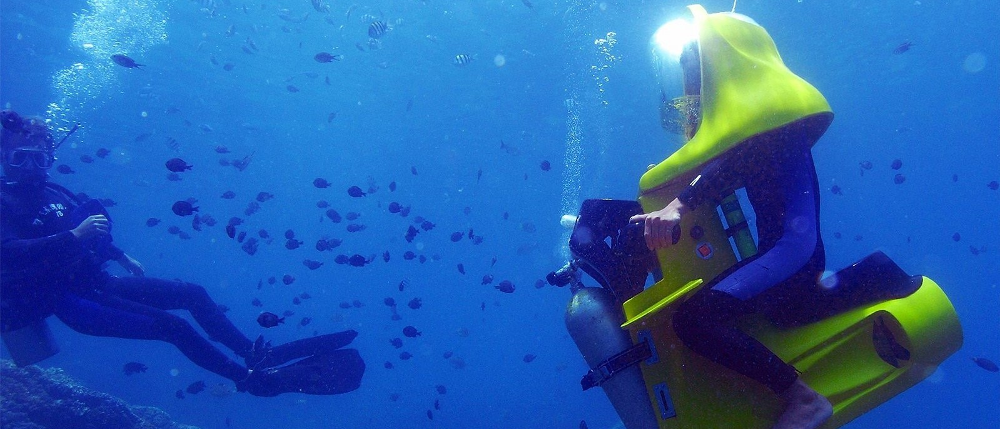

Water Bike Ride
Restrictions Apply

Submerge yourself in Bora Bora`s turquoise lagoon and ride tandem on an underwater scooter. Progressive immersion is done from a hydraulic platform and an experienced diver will accompany you during your time under water. This excursion is not permitted for children under 8 years old and for women who are pregnant, people with asthma or people unable to walk. Teens less than 16 years old are not permitted to drive the scooter. Price is per person based on two people sharing one scooter.